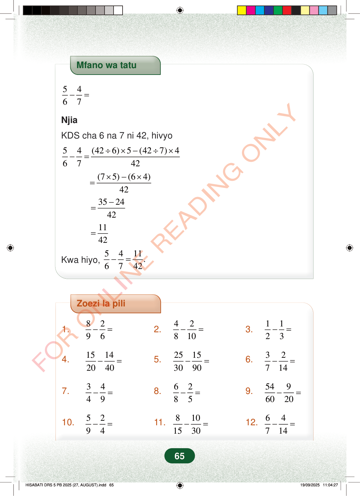

Mfano wa tatu5467−=NjiaKDS cha 6 na 7 ni 42, hivyo54(426)5(427)46742÷×−÷×−=(75)(64)42×−×=352442−=1142=Kwa hiyo,5411.6742−=Zoezi la pili1.8296−=2.42810−=3.1123−=4.15142040−=5.25153090−=6.32714−=7.3449−=8.6285−=9.5496020−=10.5294−=11.8101530−=12.64714−=65Mfano wa tatu
5 4 6 7 − =
Njia
KDS cha 6 na 7 ni 42, hivyo
5 4 (42 6) 5 (42 7) 4 6 7 42 ÷ × − ÷ × − =
(7 5) (6 4) 42 × − × =
35 24 42 − =
11 42 =
Kwa hiyo, 5 4 11. 6 7 42 − =
Zoezi la pili
1. 8 2 9 6 − = 2. 4 2 8 10 − = 3. 1 1 2 3 − =
4. 15 14 20 40 − = 5. 25 15 30 90 − = 6. 3 2 7 14 − =
7. 3 4 4 9 − = 8. 6 2 8 5 − = 9. 54 9 60 20 − =
10. 5 2 9 4 − = 11. 8 10 15 30 − = 12. 6 4 7 14 − =
65
Mfano wa tatuMfano wa tatu unaonyesha jinsi ya kutoa sehemu 5/6 na 4/7 kwa kutumia KDS 42. Majibu ya hatua yanaonyesha kuwa 5/6 - 4/7 = 11/42.<math><mrow><mfrac><mn>5</mn><mn>6</mn></mfrac><mo>−</mo><mfrac><mn>4</mn><mn>7</mn></mfrac><mo>=</mo></mrow></math>NjiaKDS cha 6 na 7 ni 42, hivyo<math><mrow><mfrac><mn>5</mn><mn>6</mn></mfrac><mo>−</mo><mfrac><mn>4</mn><mn>7</mn></mfrac><mo>=</mo><mfrac><mrow><mrow><mo fence="true" form="prefix" stretchy="false">(</mo><mn>42</mn><mo>÷</mo><mn>6</mn><mo fence="true" form="postfix" stretchy="false">)</mo></mrow><mo>×</mo><mn>5</mn><mo>−</mo><mrow><mo fence="true" form="prefix" stretchy="false">(</mo><mn>42</mn><mo>÷</mo><mn>7</mn><mo fence="true" form="postfix" stretchy="false">)</mo></mrow><mo>×</mo><mn>4</mn></mrow><mn>42</mn></mfrac></mrow></math><math><mrow><mo>=</mo><mfrac><mrow><mrow><mo fence="true" form="prefix" stretchy="false">(</mo><mn>7</mn><mo>×</mo><mn>5</mn><mo fence="true" form="postfix" stretchy="false">)</mo></mrow><mo>−</mo><mrow><mo fence="true" form="prefix" stretchy="false">(</mo><mn>6</mn><mo>×</mo><mn>4</mn><mo fence="true" form="postfix" stretchy="false">)</mo></mrow></mrow><mn>42</mn></mfrac></mrow></math><math><mrow><mo>=</mo><mfrac><mrow><mn>35</mn><mo>−</mo><mn>24</mn></mrow><mn>42</mn></mfrac></mrow></math><math><mrow><mo>=</mo><mfrac><mn>11</mn><mn>42</mn></mfrac></mrow></math><math><mrow><mtext>Kwa hiyo, </mtext><mfrac><mn>5</mn><mn>6</mn></mfrac><mo>−</mo><mfrac><mn>4</mn><mn>7</mn></mfrac><mo>=</mo><mfrac><mn>11</mn><mn>42</mn></mfrac><mi>.</mi></mrow></math>Zoezi la pili lina maswali 12 ya kutoa sehemu. Wanafunzi wanatakiwa kupata majibu ya kila swali la sehemu.Zoezi la pili1.<math><mrow><mfrac><mn>8</mn><mn>9</mn></mfrac><mo>−</mo><mfrac><mn>2</mn><mn>6</mn></mfrac><mo>=</mo></mrow></math>2.<math><mrow><mfrac><mn>4</mn><mn>8</mn></mfrac><mo>−</mo><mfrac><mn>2</mn><mn>10</mn></mfrac><mo>=</mo></mrow></math>3.<math><mrow><mfrac><mn>1</mn><mn>2</mn></mfrac><mo>−</mo><mfrac><mn>1</mn><mn>3</mn></mfrac><mo>=</mo></mrow></math>4.<math><mrow><mfrac><mn>15</mn><mn>20</mn></mfrac><mo>−</mo><mfrac><mn>14</mn><mn>40</mn></mfrac><mo>=</mo></mrow></math>5.<math><mrow><mfrac><mn>25</mn><mn>30</mn></mfrac><mo>−</mo><mfrac><mn>15</mn><mn>90</mn></mfrac><mo>=</mo></mrow></math>6.<math><mrow><mfrac><mn>3</mn><mn>7</mn></mfrac><mo>−</mo><mfrac><mn>2</mn><mn>14</mn></mfrac><mo>=</mo></mrow></math>7.<math><mrow><mfrac><mn>3</mn><mn>4</mn></mfrac><mo>−</mo><mfrac><mn>4</mn><mn>9</mn></mfrac><mo>=</mo></mrow></math>8.<math><mrow><mfrac><mn>6</mn><mn>8</mn></mfrac><mo>−</mo><mfrac><mn>2</mn><mn>5</mn></mfrac><mo>=</mo></mrow></math>9.<math><mrow><mfrac><mn>54</mn><mn>60</mn></mfrac><mo>−</mo><mfrac><mn>9</mn><mn>20</mn></mfrac><mo>=</mo></mrow></math>10.<math><mrow><mfrac><mn>5</mn><mn>9</mn></mfrac><mo>−</mo><mfrac><mn>2</mn><mn>4</mn></mfrac><mo>=</mo></mrow></math>11.<math><mrow><mfrac><mn>8</mn><mn>15</mn></mfrac><mo>−</mo><mfrac><mn>10</mn><mn>30</mn></mfrac><mo>=</mo></mrow></math>12.<math><mrow><mfrac><mn>6</mn><mn>7</mn></mfrac><mo>−</mo><mfrac><mn>4</mn><mn>14</mn></mfrac><mo>=</mo></mrow></math>